How to Configure the Integration of Asterisk + FreePBX with Bitrix24 CRM Using the Callbee Service
Important warning
To enable integration, you need to follow the steps in this instruction one by one in the order in which they are described.
Important warning
The visual placement of some elements in the integration settings may vary depending on the follow-up adjustments
Software requirements:
Asterisk + FreePBX, hereinafter referred to as PBX
- Asterisk version 13.*.* or higher
- FreePBX version 13.*.* or higher
- Static IP address (must be purchased from your Internet service provider) to access the PBX directly via the Internet
The integration is carried out by connecting the Callbee cloud service to the PBX using the Asterisk Managment Interface (AMI) via the TCP protocol. AMI accepts connections on a network port (by default,TCP port 5038)
Network Settings
Info
- The port forwarding setup interface differs depending on the router used in your network. Updated instructions on port forwarding for your router are available online.*
In order for the Callbee service to connect to your PBX, you should have a "whitelisted" static IP address or a domain name with an A record indicating your IP address, and the following two ports should be forwarded to the PBX using NAT:
- an external port (e.g. 50380) forwarded to TCP port 5038 - to access the PBX via AMI (Security warning! We recommend opening the port by allowing connection from the IP addresses specified in the list)
- an external port (e.g. 50381) forwarded to TCP port 80 (the standard port of the PBX web server) – for downloading call records
Settings for Call Recording
For the call records to be available for downloading, you need to run two commands __on the telephony application server, connecting to it via SSH:
ln -s /var/spool/asterisk/monitor/ /var/www/html/monitor
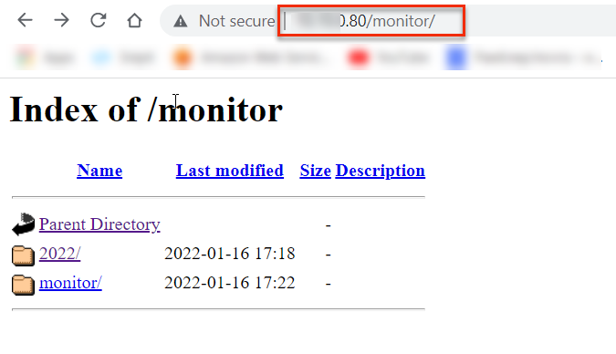
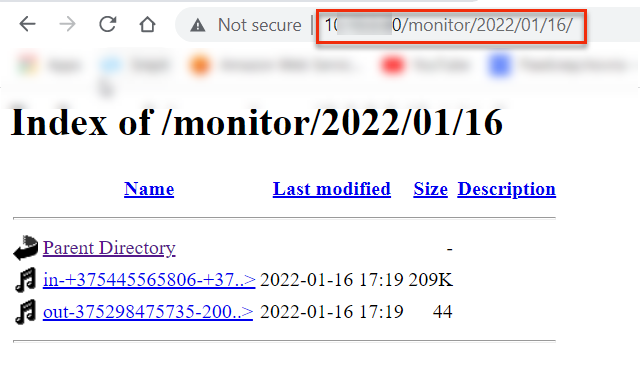
touch /var/www/html/.htaccess && echo "Options -Indexes" > /var/www/html/.htaccess
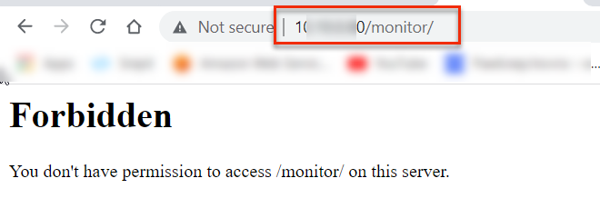
However, you will be able to access the call records for integration via the direct link

Installing and Configuring the Callbee Application in Bitrix24
Info
To set up the integration, any edition of cloud or self-hosted version of Bitrix24 is required.
- Log in to your Bitrix24 corporate portal under an administrator account.
- In Bitrix24 main menu, go to Applications:

- In the Category search bar, select Telephony integration or VoIP

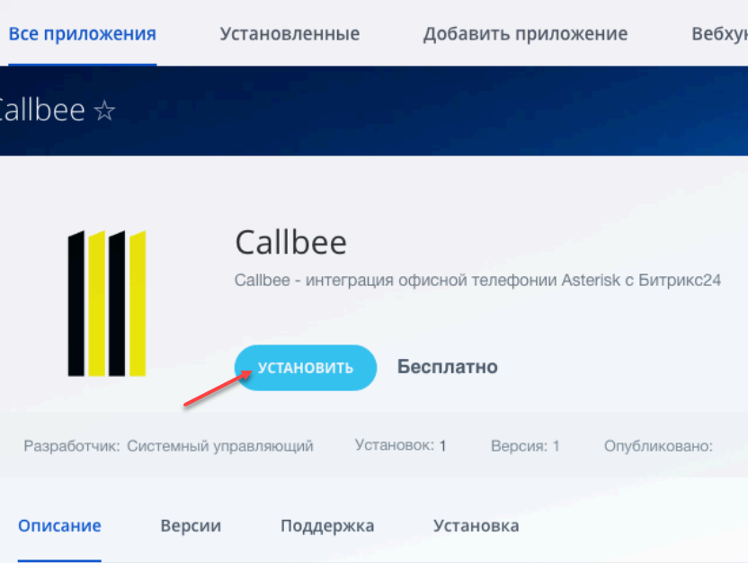
- Go to the Callbee application page and click Install :

Adding Employees’ Extension Phone Numbers in Bitrix24
- Go to Employees (1)
- Open an Employee profile (2)
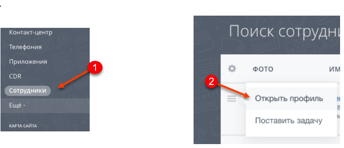
- Add the employee’s extension phone number(3)
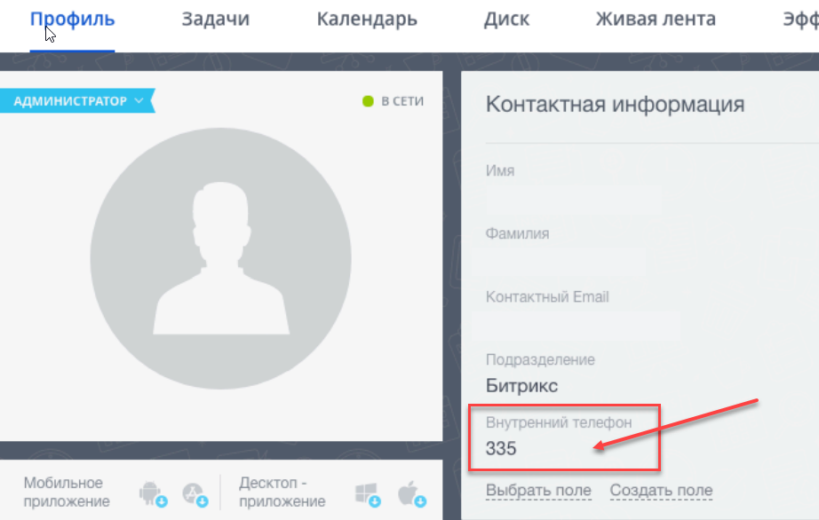
Important warning
Further Bitrix24 configuration should be performed after Asterisk + FreePBX have been configured
Asterisk + FreePBX Configuration
Important warning
- Extensions can be three-digit or four-digit (222 or 2222).
- _On all inbound routes__, the expected incoming DID number should be at least five-digit, it can be a line number in international format (example: +375291111111).
- All inbound routes and outbound routes must have call recording enabled.
- Callbee does not alter the incoming phone number. Incoming phone numbers will be forwarded to Bitrix24 as received by the PBX.(We recommend using the PBX to convert all incoming phone numbers to a uniform international format).
- When a call is made in Bitrix24 via the click-to-call feature, the PBX receives the phone number in the international format.
- For the integration to work correctly, we recommend leaving the default PBX settings except for the ones specified in this instruction.
- If an incoming call does not reach the PBX or an outgoing call goes to the line, no entities will be created in Bitrix24.
- The integration does not guarantee the correct operation of features when using the FreePBX Ring Groups module to configure the distribution of incoming calls in the PBX. For all integration features to work correctly, we recommend using Queues instead of Ring Groups.
Asterisk AMI Configuration
To connect to the Asterisk AMI, a user’s AMI needs to be created on the Asterisk side. This could be done in two ways:
-
Method 1 via CLI:
In the file at /etc/asterisk/manager_custom.conf add (as an example):
[callbee] secret=password # Substitute ‘password’ with your own password deny=0.0.0.0/0.0.0.0 permit=127.0.0.1/255.255.255.0 permit=89.108.65.246/255.255.255.255 permit=31.24.92.54/255.255.255.255 permit=46.101.225.17/255.255.255.255 read=system,call,log,verbose,command,agent,user,config,command,dtmf,reporting,cdr,dialplan,originate,message write=system,call,log,verbose,command,agent,user,config,command,dtmf,reporting,cdr,dialplan,originate,message writetimeout = 500Then run the command
asterisk -rx "manager reload" -
Method 2 via the FreePBX User Interface:
- Asterisk API module should be installed
- In the menu, select Settings(1) -> Asterisk Manager Users(2)

- Click Add Manager
- In the General tab, enter a login, set a cryptographically strong password, and
add the access rights in Permit, entering the IP addresses of the Callbee 89.108.65.246, 31.24.92.54, 46.101.225.17 servers to the AMI interface

- In the Permissions tab, set all the toggles to Yes
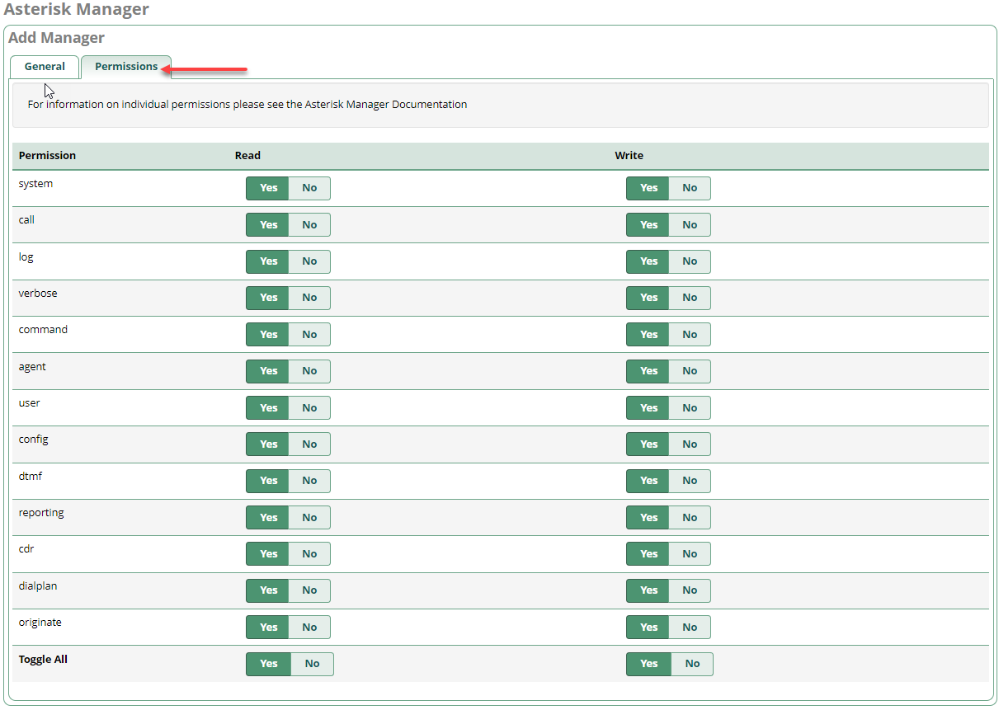
Inbound Routes Configuration in FreePBX
Example of standard configuration:
- Go to Connectivity -> Inbound Routes
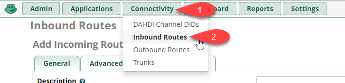
- Click the General tab

- Click the Advanced tab, set the value of the Pause Before Answer parameter to "2"

Info
To enable smart routing, you need to leave time to receive a response from the CRM system to a request for an existing contact having an identified phone number. To do this, you need to set a delay on the Pause Before Answer routes (for example, a two-second delay).
- In the Other tab, set the Call Recording parameter to Yes

Info
This configuration is performed to record calls upon receiving them in the CRM system.
Outbound Routes Configuration in FreePBX
Important warning
The Route CID field should be left blank
Example of standard configuration:
- Go to Connectivity -> Outbound Routes

- Click the Route Settings tab
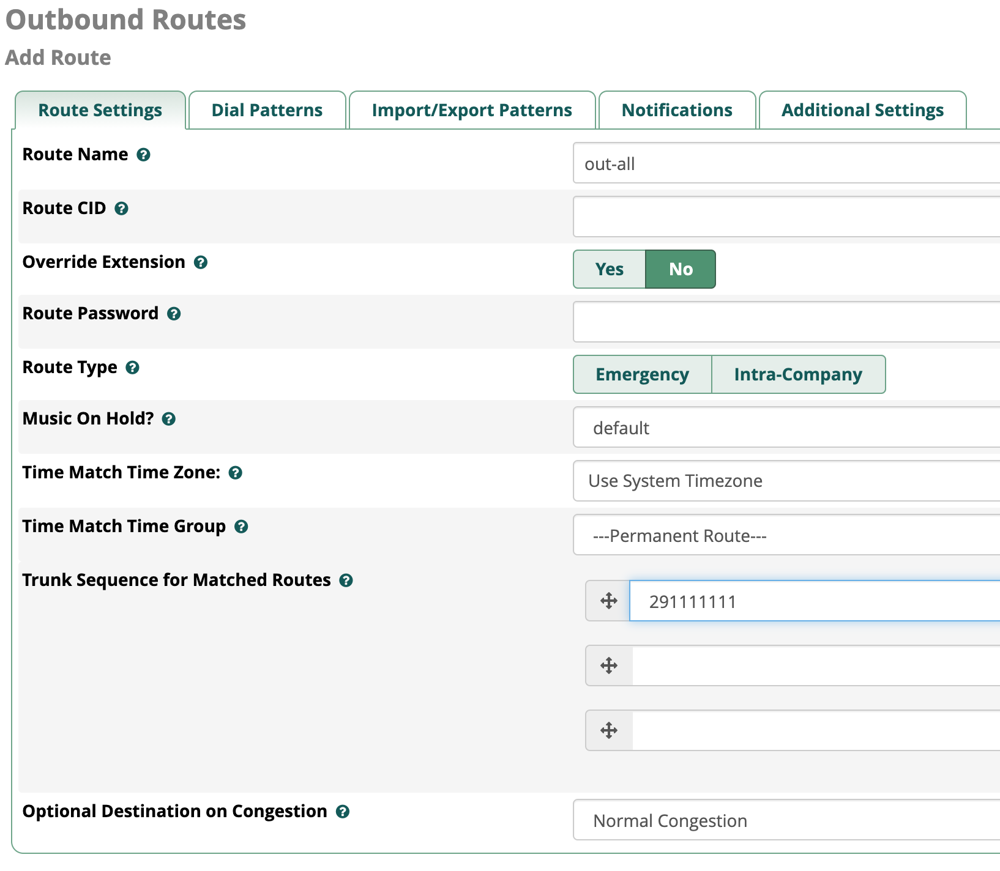
- Go to the Additional Settings tab
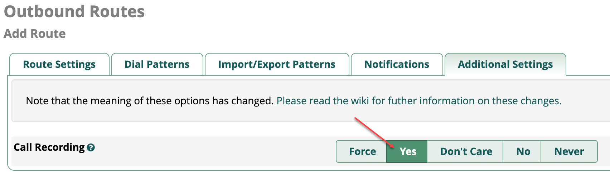
Info
- This configuration is performed to record calls upon receiving them in the CRM system.*
Extensions Configuration in FreePBX
Important warning
- Extensions should be three-digit or four-digit (208 or 2080)
- The Outbound CID field should be left to its default setting
- Extensions should be set up using the CHAN_SIP or PJ_SIP drivers
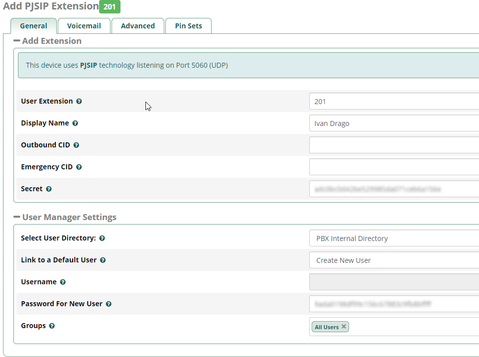
- Leave the call recording settings as default (the records are recorded while routing)

Enabling the Integration on Callbee Side
After performing all the configuration as described above, you need to enable the service.
Enabling the Integration on Callbee Side Manually
- Click the Install button in the BITRIX24 WITH ASTERISK tab.

- Fill in all the fields required for integration
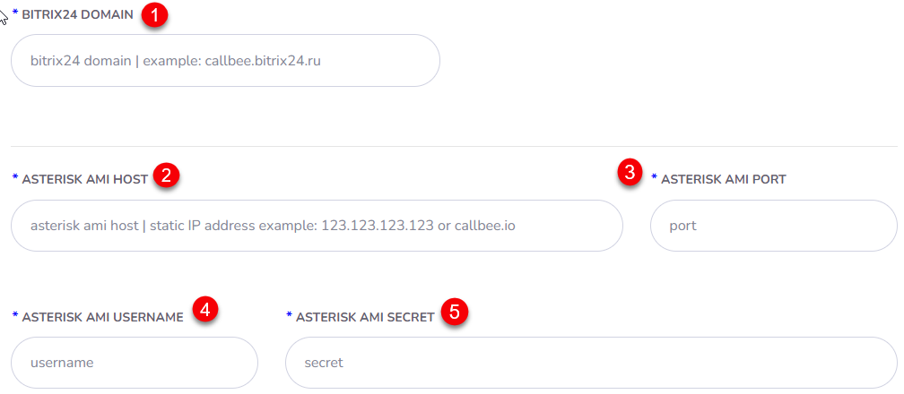
- Bitrix24 Domain (1) - Enter the domain name of your Bitrix24 (without https://)
- Asterisk AMI Host (2) - Enter the external IP address of the AMI interface or its domain name
- Asterisk AMI Port (3) - Enter the external port of the AMI interface
- Asterisk AMI Username (4) - Enter the AMI Username (See AMI Asterisk Configuration)
- Asterisk AMI Secret (5) - Enter the AMI Secret (See AMI Asterisk Configuration)
Enabling the Integration on Callbee Side Using an Installer
- Click Install Integration

- Select Bitrix24 in the CRM field
- Select Asterisk in the Platform field
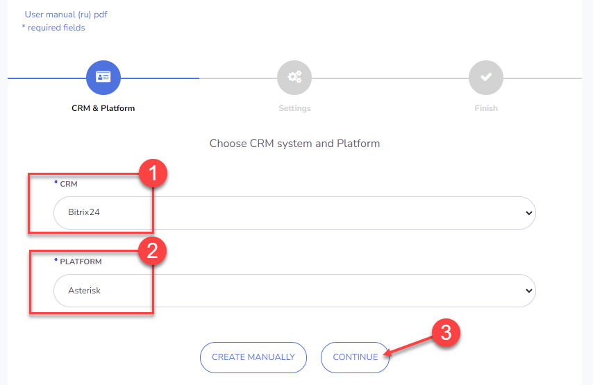
- Fill in all the required fields
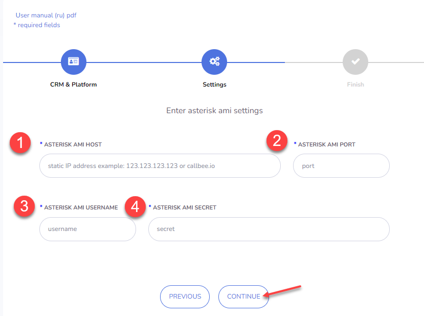
- Asterisk AMI Host (1) - Enter the external IP address of the AMI interface or its domain name
- Asterisk AMI Port (2) - Enter the external port of the AMI interface
- Asterisk AMI Username (3) - Enter the AMI Username (See AMI Asterisk Configuration)
- Asterisk AMI Secret (4) - Enter the AMI Secret (See AMI Asterisk Configuration)
Configuring the Integration on Callbee Side for Each Separate PBX Line (Available in Pro Version and Demo Mode)

- Use B24 users table (1) - Transfer of the integration extensions settings from Bitrix24 to Callbee.
- Record URL (2) - Link for call records. Using this URL, Bitrix24 will save a recording of the call. This link should always be available.
Important warning
If the PBX telephony server is located in the same LAN as the self-hosted version of Bitrix24, you can enter the local IP address of the PBX, but in this case the availability indicator will turn red (indicating an incorrect URL).

- Ignore Lines (DID) Numbers (3) - Enter the DID number(s) separated by a comma and a single space which the integration should ignore. This feature allows you not to respond to phone numbers not related to work in the CRM system. For example, direct dial numbers of the accounting or administrative department.
- Line (DID) (4) - Department/division phone number. A phone number for incoming calls that need to be referred to a division/department (the number is taken from the DID Number field in the FreePBX settings)
- Description (5) - Line (DID) description. It will be used to fill in the Line field in a Contact card and a Deal card in Bitrix24. If the Description field is left blank, the line phone number (DID) will be forwarded
- Manager ID For Missed Calls (6) - Bitrix24 user ID for missed calls (a user responsible for missed calls from new customers not registered in Bitrix24). You can set a different value for each line. This field should not be left blank!
Info
You can find the Manager ID by opening the employee's Bitrix24 profile in the address bar of your browser
 In the screenshot above, the Manager ID value is set to 1
In the screenshot above, the Manager ID value is set to 1
- Smart Call (7) - Enabling smart routing (transferring a call to a designated employee) with working hours indicated. Outside of the smart routing schedule the call will be transferred according to the default route. This feature is most often used to play a message to a customer that he got through after hours.
- Manager time in bitrix24 (8) - Enabling work schedule for smart routing from Bitrix24
- Auto Lead (Deal) (9) - Enabling automatic creation of leads or deals (+ contacts) in Bitrix24 (depending on the Bitrix24 mode of operation)
- Add to chat bitrix24 (10) - Enabling the displaying of information about all calls in the Bitrix24 chat
- Add DID Lines (11) - Adding a line for customization
- SAVE AND RESTART (12) - Saving the settings while simultaneously restarting the integration
Configuring the Integration on Callbee Side for Each Extension
Important warning
To configure the extensions using the Callbee service, you need to enable the Use B24 users table toggle
- Go to integration settings, click Settings

- Enable the Use B24 users table toggle

- After enabling the Use B24 users table button, the Bitrix24 users menu item will appear, go to it


- Go to settings (1) - Go to the settings page
- Integration Info (2) - Integration information
- Show active users (3) - Filter to display active users
- Save and restart (4) - Saving the settings and restarting the integration
- Search (5) - Searching for entries in the settings table
- Active (6) - Enabling the user (employee) settings via Callbee. Activating the commercial license for this user (active users should not exceed the number of licenses). If the toggle is set to Off, the integration will ignore this user, even if the extension phone number is entered, and all other fields are filled in.
- Bitrix ID (7) - User (employee) ID in Bitrix 24
- Name (8) - User (employee) name in Bitrix24
- Internal Number (9) - User’s (employee’s) extension phone number in __FreePBX
- External Number (10) - The personal phone number of the user (employee) who will make calls on a mobile device using the Bitrix24 click-to-call feature. When using the click-to-call feature on a mobile device, a call will be made in both directions - to the user (employee) and the customer of your company. The number is used to interact with the Bitrix24 application on a mobile device and make calls using the click-to-call feature.
- Smart Call (11) - Enabling smart routing (transferring a call to a designated employee) with working hours indicated. Outside of the smart routing schedule the call will be transferred according to the default route. This feature is most often used to play a message to a customer that he got through after hours.
- B24 Time (12) - Enabling the user’s (employee’s) work schedule for smart routing from Bitrix24
- Add to Chat (13) - Enabling the displaying of information about all calls in the Bitrix24 chat
- Auto Answer (14) - Enabling the auto answer feature on a SIP phone (hardware or software (softphone). When making calls using the click-to-call feature via Callbee, the call is initially routed as an incoming call to a SIP phone (hardware or software), and after it is received, an outgoing call is made to a customer of your company. Enabling this feature will allow a SIP phone (hardware or software) to receive a call automatically, without the involvement of a user (employee). It can be enabled if the SIP phone (hardware or software) supports this feature (for example, Yealink SIP phones with the latest firmware)
- Multiple Registration (15) - Enabling the Multiple Registration feature allows you to use the click-to-call feature when you have a number of SIP phones (hardware or software)
Important warning
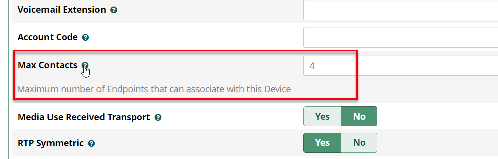
When this feature is enabled, the auto answer feature (from the previous paragraph) is automatically disabled.
Bitrix24 Configuration.
Important warning
If you do not see the items described below, please check the correctness of the implementation of previous settings!!!
-
In Bitrix24 main menu, go to Telephony

-
Then select Configure telephony > Telephony settings (1)

- In Telephony settings, click Default outbound number (2) -> Application: Asterisk and Yeastar Callbee.io
Then click Save

Integration setup is completed!